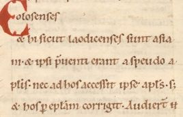
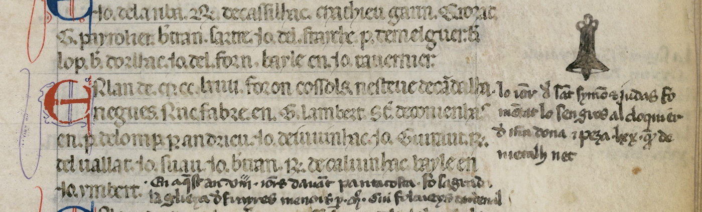

Introduction
Mettre à disposition du plus grand nombre de chercheurs ou curieux des sources primaires comme des matériaux d’étude, donc de manière fidèle tout en les rendant compréhensibles, est bien évidemment très souvent le principal enjeu d’un travail d’édition savante de documents manuscrits.
Dans tous les cas, quelles que soient les modalités de diffusion de l’édition (imprimé, électronique...) la transcription est la première étape du travail d’édition.
Ce travail s’appuiera sur des règles éditoriales qui seront explicitées, et qui seront elles-mêmes fondées sur des recommandations admises dans la discipline scientifique concernée.
L’éditeur scientifique ne s’arrêtera pas là : il lui faudra mettre en place un paratexte adapté aux besoins du projet. Ainsi, dans la plupart des cas, il voudra expliquer certains termes, donner les informations utiles pour identifier un lieu, une personne, etc. Il s’agira alors d’ajouter des notes explicatives ou historiques. Dans de nombreux cas également (édition de documents d’archives), il ajoutera avant le texte une analyse et des éléments de datation temporelle et géographique, une description physique du manuscrit. Si le texte fait partie d’un corpus, il lui attribuera un numéro d’ordre ou un identifiant, voire un titre éditorial. Il cherchera également probablement à indexer le texte, soit en exprimant de manière plus formelle des informations paratextuelles (type de document, auteur de l’acte...), soit en relevant au sein même du texte transcrit des termes ou noms propres significatifs.
Dans certains cas plus complexes, il s’agira de chercher à établir le texte à partir de plusieurs témoins de sa tradition. On ajoutera à la transcription un stemma ou tableau de la tradition, et des notes d’apparat critique permettront de rapporter au témoin choisi comme la référence les leçons des autres témoins.
Dans le cas d’une édition électronique, les travaux peuvent aller encore plus loin ; en fonction des besoins et des textes étudiés, on pourra par exemple établir et aligner au texte une traduction, identifier les parties du discours écrit, définir un glossaire lexicographique...
Si on veut encoder correctement la transcription et tout ce qu’on lui ajoute pour rendre le texte compréhensible et exploitable, qu’on le fasse directement en TEI ou qu’on passe par une étape intermédiaire, on devra choisir les éléments et attributs TEI adaptés (le modèle d’encodage choisi doit respecter et exprimer sans ambiguité les règles éditoriales).
On va dans un premier temps s’intéresser à ce que la TEI propose pour établir la transcription.
Quelles caractéristiques d’une source primaire exprimer dans un travail de
transcription ?
Voici une petite liste non exhaustive pour répondre à cette question :
- la structure logique du texte ;
- les modalités de sa mise en page ;
- les abréviations ;
- les ajouts et suppressions ;
- les erreurs syntaxiques ;
- les graphies de l’époque et leur équivalent actuel ;
- le rendu formel original (s’il a une importance)
- la ponctuation originale, ou encore les caractères originaux ;
- le cas échéant, les illustrations, dessins ou graphiques illustrant le texte ;
- peut-être d’autres choses, selon le point de vue qu’on adopte et les objectifs du projet...
Pour cette étape du travail d'édition, on aura besoin d'éléments du module core et du module transcr, qui s'est beaucoup enrichi récemment.
Structure logique et mise en page du texte
Par structure, on entend l’organisation du texte en parties constituantes, par mise en page la manière dont le texte est inscrit, réparti, sur le support.
Le texte étudié et l’objet physique sur lequel ce texte est inscrit ont des structures distinctes, qu’il faut toutes les deux représenter dans l’idéal. En effet la matérialité du document apporte des informations précieuses à l'éditeur.
Il faut noter cependant que dans l’univers TEI, le texte est avant tout considéré comme une abstraction ; de ce fait c’est sa structure logique qui prime, et à laquelle on va en général rapporter les informations relatives à la structure physique.
La plupart du temps, quel que soit le type de texte à encoder, il sera encodé au sein de balises <div> (division de texte) emboîtées.
Encodage de la structure logique (prose)
- <div> sert à marquer les divisions les plus importantes ; saisir une valeur dans l’attribut type pour consigner la nature de la division, "chapitre", "section", etc.
- <floatingText> sert à baliser un texte qui interrompt le texte le contenant à n’importe quel endroit ;
- au sein de <div>, une unité de sens est encodée au moyen de <p> (paragraphe) ;
- <list>, <table> et <figure> sont utiles pour encoder les listes, les tableaux et les illustrations ;
- des éléments plus spécialisés existent pour encoder des sections génériques (<head>...) ou propres à certains types de texte : <opener>, <salute>, <trailer> pour la correspondance, <titlePage> pour une page de titre ; <argument> pour les principaux sujets du discours s’ils sont donnés au début du texte...
- pour les pièces de théâtre, on pourra trouver des dialogues divisés en énoncés (<sp>), contenant un mélange de <p> ou de <l> facultativement entrecoupés de didascalies (<stage>) ;
- des segments de texte plus petits que des paragraphes peuvent aussi être distingués, à l’aide d’éléments tels que <s> (phrase) ou <seg> (segment) ;
- les citations incluses dans le texte peuvent être isolées au moyen des éléments <quote> ou <cit> (ce dernier, lorsque l’auteur fournit aussi la source du texte cité).
Structure logique : exemples (1)
Extraits simplifiés de l’édition du journal de prison de Henri Delescluze - AN 494AP/1, http://elec.enc.sorbonne.fr/delescluze/).
Utilisation de l'élément
<floatingText> (Journal de Delecluze,
carnet 1, pages 23-25)
<div n="88" type="jour">
<head xml:lang="fre">
<date when="1852-04-24">Samedi 24</date>
</head>
<p xml:lang="eng">Nothing.</p>
</div>
<div n="89" type="jour" xml:lang="fre">
<head>
<date when="1852-04-25">Dimanche 25</date>
</head>
<floatingText type="essai_litteraire">
<body>
<p>
<del>Il m’en souvient aussi, c’était un jour d’automne, un
parfum égaré</del>
</p>
<pb n="24"/>
<p>Une tiède journée ; un soleil vif encore de ses derniers
rayons illuminait la grande Cité, des atomes brillants se
jouaient dans le rayon lumineux, les collines le
couronnaient de brume, les bois devenaient sombres ; là-bas
le calme allait étreindre les plaines, les bois, les vallées
; et ici le bruit du plaisi allait prendre possession des
rues et des passages. </p>
</body>
</floatingText>
</div>
<div n="90" type="jour" xml:lang="fre">
<head>
<date when="1852-04-26">Lundi 26 Avril</date>
</head>
</div>
Structure logique : exemples (2)
Exemple d’utilisation de l’élément
<table> (Journal de Delecluze,
carnet 1, page 4).
<div type="day" xml:lang="fre"
xml:id="d18520213">
<head>
<date when="1852-02-13">Vendredi 13 février 1852</date>
</head>
<table type="avoir" cols="2">
<row>
<cell>[Avoir]</cell>
<cell>
<measure unit="franc">
<num>2.63</num>
</measure>
</cell>
</row>
</table>
<table type="depenses" cols="2">
<row>
<cell>1/2 litre de vin</cell>
<cell>
<measure unit="franc">
<num>0.11</num>
</measure>
</cell>
</row>
<row>
<cell>Tabac</cell>
<cell>
<measure unit="franc">
<num>1.60</num>
</measure>
</cell>
</row>
<row>
<cell>[Total]</cell>
<cell>
<measure unit="franc">
<num>1.71</num>
</measure>
</cell>
</row>
</table>
<table type="reste" cols="2">
<row>
<cell>[Reste]</cell>
<cell>
<measure unit="franc">
<num>0.92</num>
</measure>
</cell>
</row>
</table>
</div>
Structure logique : exemples (3)
Exemple d’édition d’une lettre (Journal de Delescluze,
Lettre 1, page 1 (Henri Delescluze à Charles Delescluze. 15 décembre 1851)).
<div type="lettre">
<opener>
<dateline>Belle-Île, <date when="1851-12-15">15 décembre
1851</date>. </dateline>
<salute>Mon cher ami,</salute>
</opener>
<p>Je t’écris une lettre bien courte, parce que je l’écris dans celle
que j’adresse à mère.</p>
</div>
Encodage de la structure logique (vers)
- on dispose de <l> (pour "line" : ligne de vers) et <lg> (pour "line group" : groupe de lignes fonctionnant comme une unité formelle) ;
- l’attribut typesera là aussi utilisé pour identifier le type d’unité formelle, comme "strophe", "couplet".
- lignes et groupes de lignes peuvent aussi être numérotés en utilisant les attributs n et xml:id.
Exemple : un poème de Charles Baudelaire.
<div type="sonnet">
<lg type="quatrain">
<l>Les amoureux fervents et les savants austères</l>
<l>Aiment également, dans leur mûre saison,</l>
<l>Les chats puissants et doux, orgueil de la maison,</l>
<l>Qui comme eux sont frileux et comme eux sédentaires.</l>
</lg>
<lg type="quatrain">
<l>Amis de la science et de la volupté</l>
<l>Ils cherchent le silence et l’horreur des ténèbres ;</l>
<l>L’Erèbe les eût pris pour ses coursiers funèbres,</l>
<l>S’ils pouvaient au servage incliner leur fierté.</l>
</lg>
<lg type="tercet">
<l>Ils prennent en songeant les nobles attitudes</l>
<l>Des grands sphinx allongés au fond des solitudes,</l>
<l>Qui semblent s’endormir dans un rêve sans fin ;</l>
</lg>
<lg type="tercet">
<l>Leurs reins féconds sont pleins d’étincelles magiques,</l>
<l>Et des parcelles d’or, ainsi qu’un sable fin,</l>
<l>Etoilent vaguement leurs prunelles mystiques.</l>
</lg>
</div>
Encodage de la "structure physique"
Pour exprimer la manière dont le texte est inscrit sur le support physique, des éléments vides de type ‘milestone’ (borne) sont disponibles, <gb>, <pb>, <cb> et <lb>, qui correspondent respectivement à la désignation des fins de cahier, page, colonne et ligne. On peut aussi numéroter et identifier ces éléments, au moyen des attributs n et xml:id.
Exemple :
Source : THELEME (techniques pour l’historien en ligne), dossier n°99.
<p>[...] et hi sicut Laodicenses sunt Asia<lb n="2" break="no"/>ni et ipsi
<expan>p<ex>re</ex>venti</expan> erant a pseudo a<lb break="no" n="3"/>postolis, nec ad hos accessit ipse
<expan>Ap<ex>osto</ex>l<ex>u</ex>s</expan>,
<expan>s<ex>ed</ex>
</expan>
<lb n="4"/> et hos <expan>p<ex>er</ex>
</expan>
<expan>ep<ex>isto</ex>lam</expan> corrigit. [...]</p>
Mise en page
L’élément <hi> est utile si l’on veut spécifier qu’un segment du texte initial est mis en valeur graphiquement ("highlighted") d’une certaine manière dans la source (par ex. écrit en plus grosses lettres, décoré, souligné...). L’attribut rend permet de spécifier de quel effet graphique il s’agit.
L’élément <space> sert pour consigner l’existence d’une espace significative dans le texte, laissée par le scripteur pour une raison ou une autre.
L’élément <fw> (forme work, ou élément de mise en page) permet d’encoder un titre courant (en haut ou en bas de la page), une réclame, un numéro de folio ou une autre information comparable, qui apparaît sur la page courante.
Exemple extrait de l'édition numérique, en cours de réalisation, des avant-textes de Femmes de Claude Simon : haut de la page 1 du manuscrit 1
<pb facs="#SMN-7-1-page01"/>
<fw type="runner"
rend="centered underlined">Miró</fw>
<fw type="msNumber" place="topRight">
<num>I</num>
</fw>
<fw type="pageNumber" place="topRight">
<num>1</num>
</fw>
Les abréviations
Les abréviations sont très caractéristiques des manuscrits de toutes sortes. L’usage est de distinguer plusieurs types d’abréviations.
- Abréviations par contraction
- les première(s) et dernière(s) lettres du mot sont écrites, accompagnées le plus souvent d’un signe abréviatif tel que trait suscrit (titulus), ou, plus rarement, un point : par exemple Mr. pour Monsieur. Des lettres suscrites (voyelles ou consonnes) sont également souvent utilisées pour indiquer qu’on a procédé à des contractions, elles-mêmes de divers types : par exemple s suivi de r suscrit pour sieur.
- Abréviations par suspension
- la ou les premières lettres du mot sont écrites, suivies en général d’un point ou d’une autre marque : par exemple e.g. pour exempli gratia.
- "Brévigraphes"
- ce sont des symboles spécifiques, tels que le "et" tironien (⁊) utilisé à la place de la conjonction de coordination ‘et’, ou la lettre p barrée (ᵱ), souvent utilisée à la place de la syllabe per.
Les abréviations et leur résolution
Une abréviation peut être restituée de deux manières :
- on peut choisir de consigner l’abréviation non développée, en la transcrivant simplement comme une séquence spécifique de lettres ou de symboles sur la page : par exemple, un ‘p avec une barre au travers du jambage’ ou un ‘a avec un macron’
- on peut aussi interpréter ou développer l’abréviation, en remplaçant la ou les lettres par leur signification : par exemple, ‘per’, ‘an’
La TEI permet de fournir à la fois les formes abrégées et développées des abréviations.
Encoder les abréviations
Auparavant, on se servait pour encoder les abréviations, d’éléments TEI génériques tels que <hi> et <supplied>, hors de leur périmètre normal d’utilisation.
Aujourd’hui, la TEI propose des éléments spécifiques permettant de choisir entre deux niveaux d’encodage :
- la totalité d’un mot abrégé et la totalité de sa forme développée peuvent être encodés au moyen des éléments <abbr> et <expan> ;
- le symbole utilisé pour indiquer la suppression d’une ou plusieurs lettres, et les lettres substituées à ce symbole lorsqu’on résoud l’abréviation, peuvent être respectivement encodés au moyen des éléments <am> et <ex>.
On peut utiliser tous ces éléments conjointement.
Les éléments am et ex
Avec ces éléments, qui font partie du module ’transcr’, l’éditeur peut indiquer quel est le statut des lettres ou des signes au sein de l’abréviation et au sein de la forme développée.
Voici un exemple. L’image ci-après montre un petit extrait d’une charte de la fin du XIIe siècle dans laquelle ont été utilisées de nombreuses abréviations.
 .
.
On s’intéresse ici au mot latin libere (librement), qui est écrit en utilisant un brévigraphe voulant ici dire "ber", le b avec un tilde.
Selon la stratégie éditoriale, on peut encoder cette inscription de l’une ou l’autre des manières ci-après (on dispose du caractère Unicode utile).
Toutes ces paires d’éléments peuvent être englobées dans un élément <choice>

Catégoriser les abréviations
Avec l’attribut type de l’élément <abbr>, on peut établir la distinction entre plusieurs types d’abréviations, qu’il s’agisse de préparer une analyse statistique ou de restituer ces abréviations de manière différente selon leur type et en fonction des règles d’édition critique définies pour le projet, pour l’institution ou pour le pays. Ainsi, on peut vouloir afficher le développement des abréviations par suspension entre crochets, d’autres types en italique ou entre parenthèses.
<choice>
<abbr type="brevigraphe">li<am>ᵬ</am>e</abbr>
<expan>li<ex>ber</ex>e</expan>
</choice>
L’inscription encodée ci-dessus pourra, par exemple, être affichée comme suit : ‘li(ber)e’
Comme pour d’autres éléments, les attributs
resp et
cert peuvent aussi être utilisés pour indiquer qui (parmi les éditeurs d’un texte) est responsable de la forme développée, et le degré de certitude de cette interprétation. Exemple :
Dîner <choice>
<expan resp="#NP" cert="high">extraordinaire</expan>
<abbr>extr.</abbr>
</choice>
Encodage de la langue du texte
Il peut être important de noter la langue du texte ou la langue d’une portion de texte, à l’aide de l’attribut xml:lang qui est disponible pour la plupart des éléments TEI.
L’élément <foreign> peut être employé si un mot ou une expression figurent dans le texte, que leur langue diffère de la langue du texte et qu’aucun autre élément plus spécifique n’est déjà utilisé pour ce mot ou cette expression.
Exemple (extrait simplifié de l’édition du cartulaire blanc de l’abbaye de Saint-Denis,
acte Beaurain 8 - Archives nationales, LL1157 page 541, colonne 2, ligne 3):
<p>[...] homines vero Templariorum quos habent et quos habituri sunt in
villa que dicitur <foreign xml:lang="fro">La Verrere</foreign> habebunt
usuagium in predicto nemore [...]</p>
Encodage des erreurs syntaxiques ou des segments sémantiquement
incorrects
L’élément
<sic> peut être utilisé pour indiquer que la leçon donnée par le manuscrit est erronée ou n’a pas de sens, tandis que l’élément
<corr> sert à fournir ce qui est la leçon correcte selon l’opinion de l’éditeur :
<sic>relea</sic>
<corr>relicta</corr>
Les deux éléments peuvent être associés au sein d’un élément
<choice> :
<choice>
<sic>relea</sic>
<corr>relicta</corr>
</choice>
L’élément <surplus> permet de signaler un segment de texte que l’on considère comme superflu ou redondant (par ex. du texte répété).
Exemple (extrait simplifié et recodé de l’édition du cartulaire blanc de Saint-Denis,
acte Beaurain 70, colonne 1, 3e ligne à partir du bas) :
Notum facimus quod Nivello de
Montigniaco et Philippus dictus Sarracenus fratres, milites, recognoverunt
et in jure confessi sunt coram nobis se nichil penitus habere vel reclamare
in nemoribus Beati Dyonisii de Trapis, nisi homines illius patrie ratione
usus vel alia legittima causa contra ecclesiam Beati Dyonisii aliquid
<surplus>aliquid</surplus> vellent uti eodem jure quo homines illius
patrie uterentur quantum ad pasturam.
Autre exemple (extrait de l'édition des testaments de Poilus dans ELEC (
testament n° 10, Émile Léon Grandjean, 1er août 1914) :
<p>Sain de corps et d’esprit, avant de partir <choice>
<sic>
<surplus>de
<lb/>partir</surplus>
</sic>
<corr/>
</choice> pour la
mobilisation française, j’écris sur<lb/> ce papier libre, faute d’avoir
pu me procurer<lb/> un papier timbré, mon testament et mes<lb/>
dernières volontés.</p>
Encodage des graphies anciennes et de leur forme normalisée
Les sources primaires utilisent rarement l’orthographe moderne. Pour la recherche ou pour d’autres raisons liées aux traitements informatiques prévus, la graphie moderne peut s’avérer utile dans une transcription. L’élément <reg> (regularized, en français régularisation) est disponible pour encoder une forme normalisée, tandis que l’élément <orig> (forme originale) contient la graphie d’origine non normalisée. On peut si on le souhaite regrouper ces éléments de contenu alternatif en utilisant l’élément <choice>.
Exemple (extrait simplifié de l’édition du journal de prison de H. Delescluze,
carnet 1, page 71):
<p>[...]Toutes les fleurs de ma jeunesse sont fanées. Ma tête penche vers la
terre, mon crâne est <choice>
<orig>nud</orig>
<reg resp="#NP #BA">nu</reg>
</choice>, mon avenir est brisé, <del>et</del> j’ai trente deux ans et
je suis en prison, à <placeName>Belle-Île</placeName>, condamné à dix
ans de détention.</p>
Autres exemples (extraits de l'édition des testaments de Poilus dans ELEC (testament n° 10, Émile Léon Grandjean, 1er août 1914) :
<dateline rend="right">Paris, le <choice>
<orig>1 </orig>
<reg>1<hi rend="sup">er</hi> </reg>
</choice>
<choice>
<reg>août</reg>
<orig>Août</orig>
</choice> 1914<choice>
<orig>.</orig>
<reg/>
</choice>
<lb/> (Premier <choice>
<orig>Août</orig>
<reg>août</reg>
</choice> 1914).</dateline>
Ajouts, suppressions et substitutions add et del
Les changements opérés sur le texte inscrit, qu’ils soient faits par le scripteur ou ultérieurement par une autre main, peuvent être encodés au moyen des éléments <add> (ajout) ou <del> (suppression).
- <add> contient des lettres, des mots ou des phrases insérées dans le texte par un auteur, un copiste, un annotateur ou un correcteur.
- <del>contient une lettre, un mot ou un passage supprimé, marqué comme supprimé, sinon indiqué comme superflu ou erroné dans le texte par un auteur, un copiste, un annotateur ou un correcteur.
Exemple (extrait simplifié de l’édition d’une charte italienne du XIIe siècle) :
Quam rogatus sum scribere
ego Gerardus scriniarius in mense et indictione suprascripta et <add place="interlinear">.XI.</add>
Autre exemple (extrait de l'édition des testaments de Poilus (
testament n° 3 Marie René Patey, 31 juillet 1914), deuxième page):
<p>Je serais heureux que mon mobilier,<lb/> en particulier mon <del>bu</del>
mobilier de bureau,<lb/> ne fût pas vendu par les miens.</p>
addSpan et delSpan
Ces deux éléments délimitent une section de texte au moyen de pointeurs plutôt qu’en encadrant la section de texte. Ils sont utiles si un ajout ou une suppression chevauche une autre portion de texte, ou encore si la séquence de texte ajoutée est suffisamment longue pour avoir sa propre structure.
L’attribut spanTo indique où se situe la fin d’une portion de texte commençant par l’élément qui porte l’attribut.
Exemple (
édition du Petit Thalamus de Montpellier, annales occitanes, année 1220) :
<div xml:id="AA9-a1220">
<p>
<hi rend="blueInitial">E</hi>n l’an de <date when="1220">MCCXX</date>, foron cossols : <persName ref="#FBorzes">en Fermin
Bor-<lb/>zes</persName>, <persName ref="#BDoycha">
<choice>
<abbr>B'.</abbr>
<expan>Bernat</expan>
</choice> Doycha</persName>, <persName ref="#PdGros">
<choice>
<abbr>P.</abbr>
<expan>Peyre</expan>
</choice> de Gros</persName>
<persName ref="#DdGros">Durant de Gros</persName>, [...]. E fon
bayle <persName ref="#BdGros">en <choice>
<abbr>B'.</abbr>
<expan>Bernat</expan>
</choice> de Gres</persName>.</p>
<addSpan place="marginLeft" spanTo="#a008"/>
<p>Aquest an, en setembre, fes tant<lb/> gran plueya que derroquet la <lb/>
<placeName ref="#Les">rebieyra de Les</placeName> ; <app>
<lem>et</lem>
<note resp="#ed" xml:lang="fre"
type="criticalApparatus">Écrit
avec une encre plus claire.</note>
</app>
<persName ref="#CdMontfort2">lo comte <lb/> Amalric</persName> pres
<placeName ref="#Servian">Servian</placeName> et auci <lb/> la
gent am bastos<note resp="#ed" xml:lang="fre"
type="criticalApparatus">Paragraphe ajouté au bas du fol. LXXI
vº.</note>.</p>
<anchor xml:id="a008"/>
</div>
Substitutions
Les ajouts et suppressions sont parfois considérés comme une seule opération de substitution ; voici quelques scénarios possibles :
- un mot ou une lettre écrit par-dessus un(e) autre ;
- un mot ou une lettre supprimé, remplacé par un(e) autre écrit au-dessus par la même main lors de la rédaction du texte ;
- un mot ou une lettre supprimé, remplacé par une main différente à un autre moment ;
- une longue série de substitutions portant sur un segment de texte, l’ordre des substitutions pouvant être incertain, ainsi que le choix de la leçon à préférer
Dans de tels cas, les éléments <add> et <del> peuvent être groupés au moyen de l’élément <subst> (substitution).
Exemple :
<add hand="#PDN" place="margin-left">
<subst>
<del>Oui</del>
<add>Non, une demie</add>
</subst>
</add>
Autre exemple (extrait de l’édition d’une lettre relative aux auteurs d’un récit de voyage en Abyssinie) :
<p>
<add hand="#DJB" place="inspace">J’ai l’honneur de vous proposer de
vouloir bien nommer chevaliers de l’ordre national de la Légion
d’honneur MM. Antoine et <subst hand="#DJB">
<del>Joseph</del>
<add place="above">Arnauld</add>
</subst> d’Abbadie.</add>
</p>
En l’absence d’indication, la suppression précède l’ajout, mais l’attribut seq peut être utilisé pour spécifier dans quel ordre les interventions ont eu lieu.
Exemple extrait de l'édition numérique, en cours de réalisation, des avant-textes de
Femmes de Claude Simon : haut de la page 1 du manuscrit 1 :
<ab xml:id="ms1-t01-a02">
<subst>
<del seq="1">Fabrique</del>
<del seq="2">
<add seq="1">Fabrica de</add>
</del>
</subst>
</ab>
Autres éléments de marquage du processus d'écriture
L'élément générique <mod> indique toute modification identifiée au sein d'un document, sans présupposé sur la fonction de cette modification. Il peut être utile lorsqu'on souhaite spécifier ce que l'on voit sur un manuscrit, plutôt qu'une interprétation de l'éditeur.
L’élément <restore> indique une intervention qui conduit au retour du texte à un état antérieur, par annulation d’une opération ou instruction de l’éditeur ou de l’auteur.
Si dans la ligne
‘For I hate this my body’ du poème de D. H. Lawrence
Eloi, Eloi, Lama Sabachthani?, le mot
‘my’ a d’abord été supprimé puis restauré en écrivant
‘stet’ dans la marge, on pourra encoder ce processus ainsi :
<p>[...] For I hate this <restore hand="#dhl"
type="marginalStetNote">
<del>my</del>
</restore> body [...]</p>
Depuis peu il existe aussi en TEI des éléments pour marquer des opérations de réécriture (<retrace>), de rétablissement (<undo>) ou de confirmation d'annulation. Enfin, récemment également, ont été ajoutés à TEI des éléments pour indiquer les opérations de transposition. AU sujet de tous ces éléments, voir http://www.tei-c.org/release/doc/tei-p5-doc/en/html/PH.html#alterations.
L'élément <metamark> contient ou décrit tout type de signe graphique ou de lettre dont la fonction est de spécifier comment le document doit être lu, et ne fait donc pas partie du contenu même de ce document.
Exemple (extrait de l’édition critique du Petit Thalamus de Montpellier, fol. 77 recto, année 1264): 
<addSpan place="marginRight" spanTo="#a037"/>
<metamark function="flag" place="above">
<graphic url="#cloche2" ana="#cloche"/>
</metamark>
<p>Lo jorn de Sant Symon et Judas fo <lb/>montat lo sen gros al <lb/>
<placeName ref="#cloquierNDdT">cloquier de Nostra Dona</placeName> ; et
peza LXX quintals de <lb/>metalh net<note resp="#ed" xml:lang="fre"
type="criticalApparatus">Ce texte, situé dans la marge de droite,
est précédé d’un dessin de cloche.</note>.</p>
<anchor xml:id="a037"/>
Autre exemple (extrait de l'édition des testaments de Poilus dans ELEC :
testament n° 25 (Alphonse René Poy, 2 août 1914):
<head>Ceci est mon testament.</head>
<metamark rend="shortHorizontalWavyLine"
function="separating"/>
<p>Je lègue l’universalité des biens<lb/> meubles et immeubles que je
laisserai<lb/> à mon décès à ma femme, née<lb/> Jeanne Fortunet.</p>
<p>En conséquence, je l’institue pour<lb/> ma légataire universelle.</p>
Restitutions de portions de texte dans la transcription
Lorsqu’un mot est restitué par l’éditeur, on peut utiliser l’élément <supplied>.
Il est d’usage de distinguer le texte devenu aujourd’hui illisible ou disparu par suite de dommages matériels, mais réputé présent à l’origine dans le document manuscrit (qui est imprimé entre crochets carrés selon certaines conventions éditoriales), ou le texte simplement omis (par inadvertance ou pour une autre raison) par le scripteur. On fera cette distinction dans le fichier TEI en se servant de l’attribut reason.
les attributs resp et cert pourront être employés ici comme ailleurs. Un attribut source est également disponible pour indiquer qu’on se fie à un autre témoin du texte pour proposer une restitution.
Exemple (édition des testaments de Poilus,
testament n° 41, Paul Marcel Dumesny, 3 août 1914) <p>Je soussigné <persName ref="#PMDumesny">Dumesny Paul<lb/>
Marcel</persName>
<choice>
<orig/>
<reg>,</reg>
</choice> par ce présent
papier<choice>
<reg>,</reg>
<orig/>
</choice>
<lb/>
<choice>
<sic/>
<corr>
<supplied resp="#editors">déclare</supplied>
</corr>
</choice> donner à mon épouse<lb/>
Chamblant Marie Denise tout<lb/> ce que je possède [...]</p>
L’élément gap (texte manquant ou non transcrit)
Lorsque le texte manquant ne peut être rétabli, l’élément à utiliser est
<gap>. A l’aide de l’attribut
reason, on pourra donner la raison de cette lacune dans la transcription, et les attributs
extent et
unitdonneront la taille présumée du segment manquant. Exemple (extrait simplifié de l’
édition des comptes des consuls de Montferrand, registre CC 155 - compte des années 1274-1275) :
<item n="1.33">Item C s. qu ac P. d’Ermeneiras qu enportet Jo. de N<gap extent="2"/>
</item>
L’élément <gap> peut aussi être utilisé lorsque le segment de texte, bien présent et lisible, est omis dans la transcription, que ce soit pour des raisons éditoriales ou parce qu’on a sélectionné les sections de texte à transcrire.
Marquage des dommages matériels et difficultés de lecture
Utiliser l’élément <unclear> si le texte est devenu partiellement illisible, par exemple par suite de suppression ou dommages matériels, de sorte qu’il peut être lu mais sans certitude.
Utiliser l’attribut reason pour déclarer la cause de l’incertitude dans la transcription et l’attribut cert pour donner une idée de la confiance que l’on peut avoir dans la transcription.
Exemple (édition des carnets de prison de Delescluze ; carnet 1, page 11, 6 avril 1852)
<p>
<persName ref="#personMalebranche"
xml:id="diary1Index084">
<choice>
<orig>Mallebranche</orig>
<reg resp="#NP #BA">Malebranche</reg>
</choice>
</persName> est chrétien. <del>
<gap reason="unreadable"/> je
<gap reason="unreadable"/> dès aujourd’hui <gap reason="unreadable"/>
<unclear resp="#NP #BA">miracle</unclear> : il a raison. Je <gap reason="unreadable"/>
<unclear resp="#NP #BA">crois à Dieu</unclear>
</del>
</p>
L’élément <damage> est à utiliser pour indiquer les zones du document sur lesquelles des dommages matériels affectent le texte, mais où l’on peut lire au moins une partie du texte avec certitude. Les attributs agent et extent précisent respectivement la cause et l’étendue des dommages.
Encodage des informations sur les mains et sur leurs interventions dans le
manuscrit (1) : description des mains
L’élément <handNote> (note sur une main) est utilisé pour fournir des informations sur chacune des mains qui sont reconnues dans le document édité.
- Quand le module 'transcr' est utilisé, l’élément <handNotes> est disponible au sein de l’élément <profileDesc> de l’en-tête TEI, pour contenir un ou plusieurs éléments <handNote>. (méthode simple)
- Quand le module 'msdescription' est utilisé, l’élément <handDesc> devient également disponible comme une partie de la description structurée d’un manuscrit.
Il est possible d’utiliser ensemble les deux éléments si, par exemple, l’élément <handDesc> contient un résumé unique décrivant toutes les mains successivement, pendant que l’élément <handNotes> décrit les particularités de chacune des mains.
Exemple :
<handDesc>
<handNote xml:id="AA" scope="major">Antoine d’Abbadie (auteur du récit
de voyage original)</handNote>
<handNote xml:id="DJB" scope="minor">Jean-Baptiste Dumas, ministre du
Commerce et de l’Industrie (auteur de la plupart des ajouts,
suppressions et substitutions apportés au récit de voyage, dans le
but d’étayer la proposition à la Légion d’honneur)</handNote>
<handNote xml:id="EPR" scope="minor">un membre inconnu du cabinet du
ministre, chargé de la relecture de l’épreuve du récit de voyage,
qui était destiné à être publié, et auteur d’additions
mineures</handNote>
</handDesc>
Encodage des informations sur les mains et sur leurs interventions dans le
manuscrit (2) : marquage d'un changement de main : handShift
<handShift> (reprise de main) marque le début d’une section du texte écrite par une nouvelle main ou le début d’une nouvelle séance d’écriture.
Exemple (extrait de l'édition des carnets de prison de Henri Delescluze,
passage rédigé n° 15, page 2):
<l>Comme aujourd’hui, le Ciel était étincelant,</l>
<l>Les oiseaux se taisaient et le soleil brillant</l>
<l>Colorait en or <subst>
<del>pur</del>
<add place="above">
<handShift medium="encre_bleue"/>mat</add>
</subst>
<handShift medium="encre_brune"/>la campagne haletante ;</l>
Exemple (extrait de l'édition du Petit Thalamus de Montpellier :
ms AA9, annales occitanes, année 1225, en marge à droite)
<p>Aquest an, a XIIII febrier, egal<lb/> mieja nuog, fo eclipsi de<lb/> la
luna ; et en novembre fo sagrada<lb/>
<placeName ref="#GlèisadeGranmont">la glieya de
Granmont</placeName>.</p>
<p>
<handShift/>Aquest an fo facha la pas<lb/> de <placeName ref="#Genoa">Jenoa</placeName>, <placeName ref="#Pisa">Piza</placeName>,
<placeName ref="#Nissa">Nissa</placeName>, <placeName ref="#Tolon">Tholon</placeName>,<lb/>
<placeName ref="#Yeyras">Yeyras</placeName> et <placeName ref="#Antibol">Antibol</placeName>
<note resp="#ed" xml:lang="fre"
type="criticalApparatus">Cet item est écrit d’une autre main que le
précédent.</note>.
</p>
Encodage des informations sur les mains et sur leurs interventions dans le
manuscrit (3) : utilisation de l’attribut hand
L’attribut hand est utilisé pour spécifier qu’un segment de texte (division, paragraphe, ou segment plus petit) est écrit par une main donnée. Il contient un pointeur vers la description de la main concernée. Exemple (extrait de l'édition de:
<handDesc>
<handNote xml:id="secretaire"
scope="major">Un secrétaire a couché par écrit
une liste de questions.</handNote>
<handNote xml:id="PDN" scope="minor">Philippe de Noailles (1715-1794),
intendant et gouverneur du château et domaine de Versailles, a porté
dans la marge de gauche les réponses du roi, en paraphant ces réponses.
Il a également signé le document.</handNote>
<handNote xml:id="anonyme" scope="minor">une autre main a noté la date du
document en haut de la page.</handNote>
</handDesc>
<div>
<p>Le sieur Luthier demande si l’on éclairera<lb/> et chauffera le château
de Marly le <lb/> voyage prochain comme dans les voyages<lb/>
ordinaires.</p>
<addSpan place="margin" spanTo="#adds1"
hand="#PDN"/>
<p> Le pavillon du roy comme <lb/>à l’ordinaire, mais l’on ne <lb/>donnera
de bois d’arrivée à <lb/>personne. </p>
<anchor xml:id="adds1"/>
</div>
Déclaration des images numériques des documents : l'élément
facsimile
Il est possible, grâce à l'élément <facsimile>, placé entre <teiHeader> et <text>, de déclarer une liste d'images numériques de la source primaire éditée.
Exemple :
<facsimile>
<graphic xml:id="SMN-7-1-pageTitre"
url="images/SMN7-1-001.jpg"/>
<graphic xml:id="SMN-7-1-page01"
url="images/SMN7-1-002.jpg"/>
<graphic xml:id="SMN-7-1-page02"
url="images/SMN7-1-003.jpg"/>
</facsimile>
Les éléments <graphic> peuvent par ailleurs être encodés au sein d'éléments <surface>, qui définissent, grâce à un système de coordonnées, des surfaces de référence. Les surfaces peuvent être subdivisées en <zone> (voir pour plusieurs exemples complexes les Tei Guidelines (http://www.tei-c.org/release/doc/tei-p5-doc/en/html/PH.html#PHFAX.
Une fois ces différents éléments dotés d'attribut xml:id, on peut, depuis le texte édité, faire référence à une image ou à une zone donnée via l'attribut facs.
Exemple (modèle de fichier TEI pour l'édition d'un testament de Poilu):
<facsimile xml:base="blah">
<surface type="will-page" n="01">
<graphic url="TIFF/FRAN_Poilus_t-0001_01_A.tif"
xml:id="testament-0001_vue-01_jpg"/>
<graphic url="JPEG/FRAN_Poilus_t-0001_01_L.jpg"
xml:id="testament-0001_vue-01_tif"/>
</surface>
<surfaceGrp type="will-page" n="02">
<surface type="will-page-part" n="02a">
<graphic url="JPEG/FRAN_Poilus_t-0001_02a_L.jpg"
xml:id="testament-0001_vue-02a_jpg"/>
<graphic url="TIFF/FRAN_Poilus_t-0001_02a_A.tif"
xml:id="testament-0001_vue-02a_tif"/>
</surface>
<surface type="will-page-part" n="02b">
<graphic url="JPEG/FRAN_Poilus_t-0001_02b_L.jpg"
xml:id="testament-0001_vue-02b_jpg"/>
<graphic url="TIFF/FRAN_Poilus_t-0001_02b_L.jpg"
xml:id="testament-0001_vue-02b_tif"/>
</surface>
</surfaceGrp>
</facsimile>
<div type="will">
<pb facs="#testament-0001_vue-01_jpg"/>
<dateline rend="centered">
<placeName type="willPlace">Paris</placeName>,
le trente et un Juillet<lb/> mil neuf cent quatorze</dateline>
<p>[...] pour mon frère André de remettre aux<lb/> personnes ci-après
les legs suivants :</p>
<pb facs="#testament-0001_vue-02_jpg"/>
<list>
<item/>
</list>
</div>
Une solution alternative pour l'encodage du texte : l'élément
sourceDoc
Depuis 2012, la TEI P5 a évolué pour permettre un encodage des objets textuels comme des sous-cmposants d'éléments représentant la surface physique sur lesquels ils sont inscrits. On utilisera pour ce faire l'élément <sourceDoc>, également disponible à la suite de <teiHeader> dans <TEI>. Dans <sourceDoc>, on pourra définir des zones de texte, fournir les coordonnées de ces zones dans l'image numérique de référence, puis y transcrire des lignes (<li>) ou des segments de texte (élément <seg>). Dans <line> et <seg> on retrouvera entre autres tous les éléments utiles pour la transcription des micro-phénomènes d'écriture.
On peut voir à ce sujet les Guidelines TEI (http://www.tei-c.org/release/doc/tei-p5-doc/en/html/PH.html#PH-transcr
{kind=link}
{kind=link}